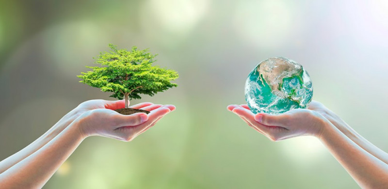
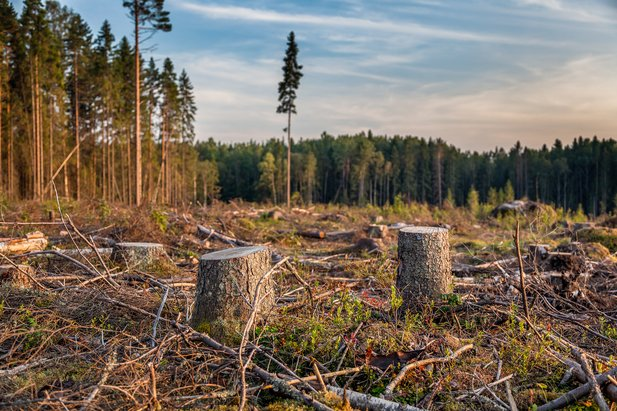
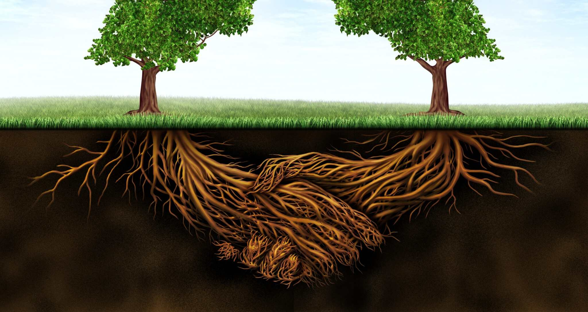
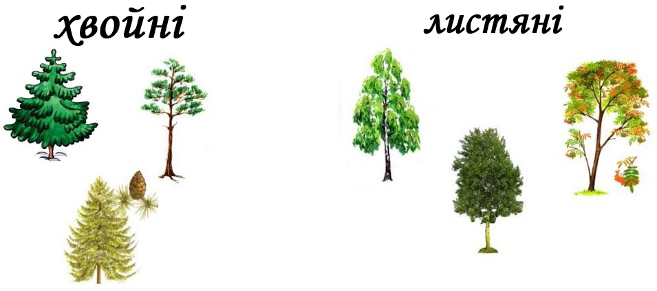
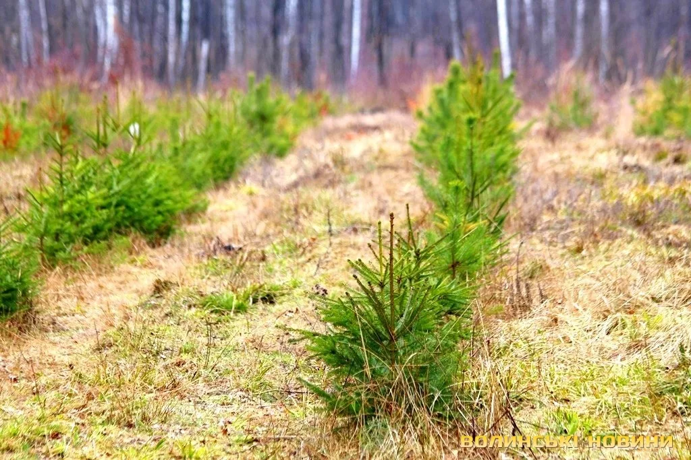

Чому важливо берегти ліси? 🌳
Ліси очищають повітря, дають притулок тваринам і регулюють клімат. Збереження дерев — це збереження життя.

Що буде, якщо зникнуть ліси? 🌳❌
Зникне багато видів тварин, погіршиться якість повітря, зросте температура, виникнуть повені та ерозія ґрунтів.

Скільки кисню може виробити одне дерево за рік? 🌳✨
Одне велике дерево може виробити достатньо кисню для двох осіб на рік.

Чи "спілкуються" дерева між собою? 🌳🗣️🌳
Так, через кореневу систему та грибницю дерева можуть передавати сигнали про небезпеку.

Чим відрізняються хвойні дерева від листяних? 🌲🍃
Хвойні мають голки замість листя і часто вічнозелені (наприклад, сосна), а листяні скидають листя восени (наприклад, дуб, береза).

Що таке повторне заліснення? 🌱🌳
Це висаджування нових дерев на місці зрубаних або знищених лісів.
